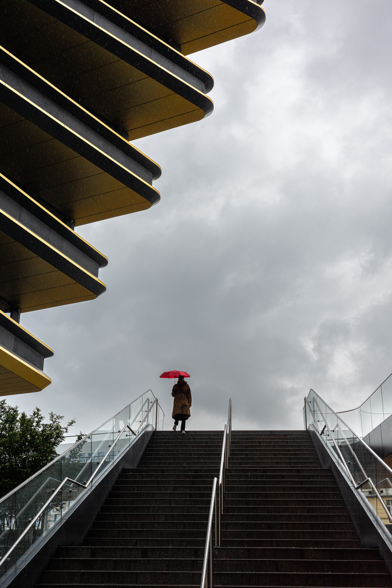
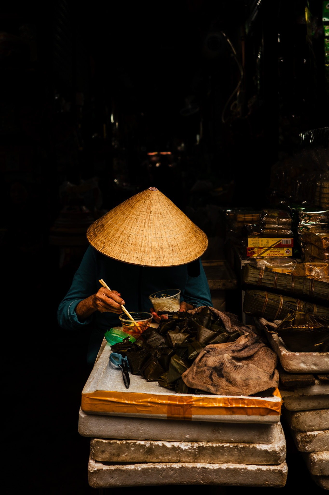
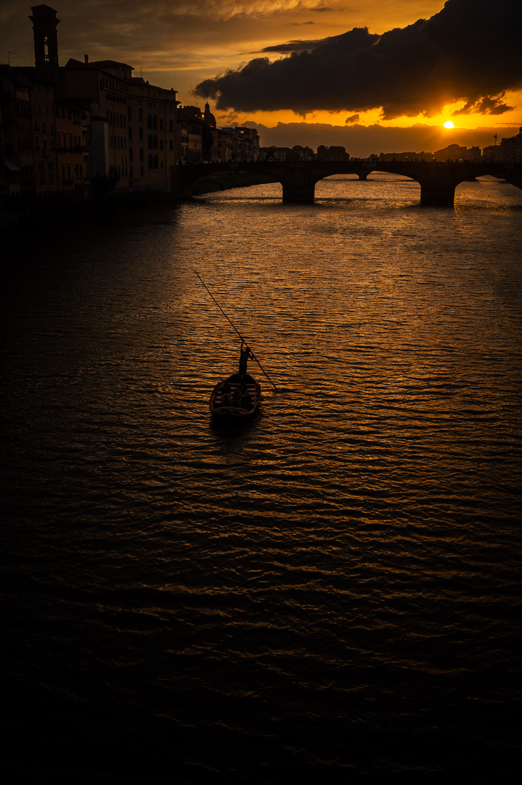
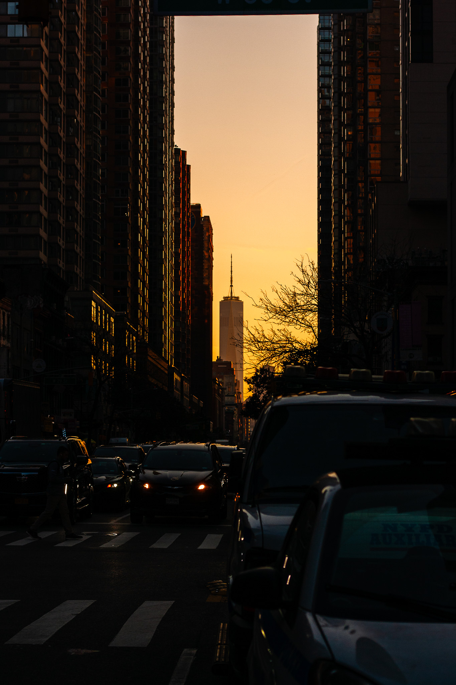
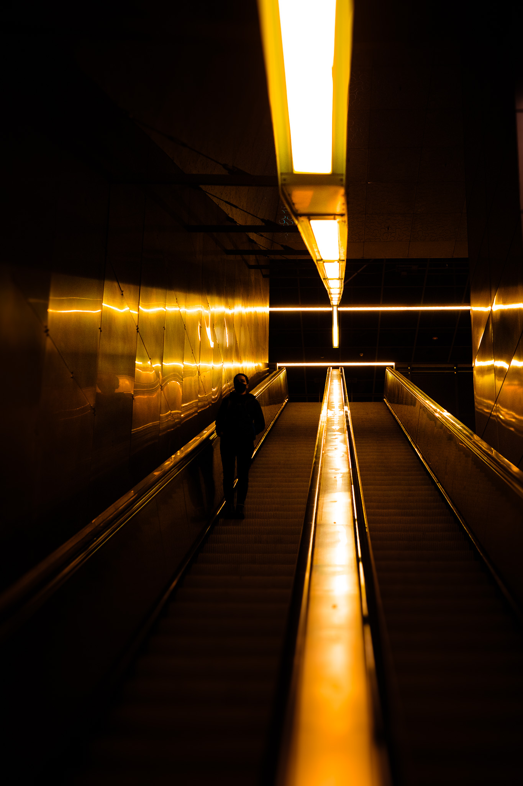
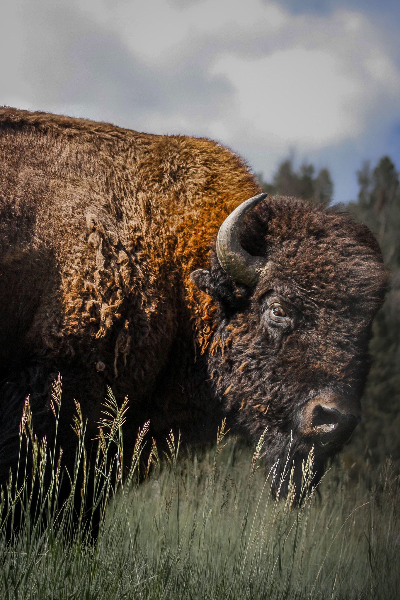

Central Europe
Images shot in Germany, Austria, Czechia, and Hungary during June 2024.
Captured with the Ricoh GRIIIx.

Vietnam
Images shot in January 2024 from Hanoi, Hoi An and Ho Chi Minh.
Captured with the Ricoh GRIIIx.

Italy
Images shot in the Abruzzo Region, Salerno, Rome and Florence between April 2024
and June 2024. Capture with the Ricoh GRIIIx.

NYC
Images shot in New York City during October and November 2023. Captured with the
Canon Rebel XS Equipped with a Canon EF 50mm f/1.8.

Pacific Northwest
Images shot in Seattle and Vancouver, BC, during March 2024. Captured with the Ricoh GRIIIx.

Montana
Images shot in Bozeman and surrounding areas between June 2023 and August 2023.
Captured with the Canon Rebel XS equipped with a Canon EF 75-300mm f/4-5.6.
 CONTACT
35MM
DIGITAL
ISAAC GREENWALD
CONTACT
35MM
DIGITAL
ISAAC GREENWALD